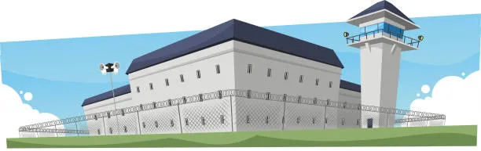

When most people think of security fencing, chances are they imagine them with razor coils. Razor coils are certainly an effective barrier (although, like any type of fencing, they're not completely infallible.) But since razor coils are so rare in Canada, many people don't know too much about them aside from that. So we've put together some interesting facts about razor coils so you can take a "crash course."
1. It's Hard to Get Permission to Install Them
Razor coils can be very dangerous to people and animals. Which is why you can't just install them wherever you like in Canada. You will need to get special permission to install razor coils in Canada, and it's quite difficult to get. Razor coils are mostly used on correctional facilities and military sites, with government permission, and in very remote locations. Even then, they are positioned very high up, or on the inside of other kinds of fencing, so there's very little chance anyone would accidentally come into contact with them. Don't try to install razor coils until you have permission! You might get a fine.
2. There Are Several Kinds of Razor Coils
Razor coils are used all over the world, and although we mostly use what is called "BTC" in Canada, there are other kinds. Razor coil types include:
- BTC or Barbed Tape Concertina, which is the round razor coils we see most often in Canada. They're made of interconnected spirals of razor wire, which gives them the "concertina" shape they're named for.
- Flatwrap which is a two dimensional razor coil. The razor wire is wound to create a spiral and then clipped where the wires intersect, but unlike BTC, this is not a three dimensional coil. Which allows it to be tied directly onto fence mesh.
- Electrocoils are a type of BTC coils that have electric fence insulators and wire inside the actual coil. These can be connected to a fence energiser, so you not only have razor coils, but an electric current inside the coil. These are used on high security prisons in some parts of the world, where there are zoned electric fences that are monitored from a central command station or guardhouse.
- Razor mesh is not exactly a coil, but it's made of the same material. Razor mesh is supplied in large sheets of diamond mesh made from razor wire.
Most of these types of razor mesh are not available and not commonly used in Canada, but it's worth knowing that they exist.
3. Made from Different Materials
You might think that razor coils are only available in galvanized steel, and that's the most common material in Canada. But razor coils are also made in materials like stainless steel, in grades 304 and 316, and sometimes, a stainless steel barb strip is wrapped around a galvanized wire core.
In most cases, you will see Canadian razor wire specifications calling for "galv/galv" which means a galvanized razor strip wound around a galvanized core wire.
4. Various Diameters
Razor coils come in different sizes, and because of their shape, that is usually measured based on the diameter of the coil. The most common sizes for razor coils are 450mm or 18", 700mm or 28", and 980mm or 39". The diameter of the coil is also based on the amount it is stretched. So of course, if the coil is stretched more or less, the diameter will change.
5. Razor Styles
Another thing you probably don't know about razor coils is that there are different types of razor styles. The razor ribbon that wraps around the wire itself is available in short, medium and long barb, which refers to the length of the barb and the sharpness of the point.

6. Hazardous Installation
Many kinds of fencing can be installed as a DIY project — but never razor coils! Razor coils should only ever be installed by highly trained fence professionals, using the right tools and PPE.
7. Hazardous Waste
The last thing we're sharing about razor coils today is that they are also very hazardous to dispose of. Whether you have leftover coils on your site or you're taking down and replacing old coils, they need to be disposed of with the utmost care. Razor coils can be very dangerous and even deadly to people and animals, and they should never be disposed of in an ordinary landfill. Make sure that the coils are taken off site carefully, cut into pieces and disposed of at a metal recycling facility that is capable of disposing of them properly.
At Kestrel Metal, we provide complete security fencing solutions tailored to your project requirements. If you have a project where razor coils are being considered, we're always happy to help with technical information and budget pricing for your high-security fence project. Request a Quote today and let our team of experts guide you through the process.
Need quality razor wire coils for your security application? At Kestrel Metal, we supply premium galvanized and PVC-coated razor wire coils and concertina products. Our experienced team provides technical support and competitive pricing with worldwide shipping. Request a Quote today — we respond within 24 hours with detailed specifications and pricing for your project.